Carbohydrates are the most abundant class of organic compounds found in living organisms. They originate as products of photosynthesis, an endothermic reductive condensation of carbon dioxide requiring light energy and the pigment chlorophyll.
As noted here, the formulas of many carbohydrates can be written as carbon hydrates, Cn(H2O)n, hence their name. The carbohydrates are a major source of metabolic energy, both for plants and for animals that depend on plants for food. Aside from the sugars and starches that meet this vital nutritional role, carbohydrates also serve as a structural material (cellulose), a component of the energy transport compound ATP, recognition sites on cell surfaces, and one of three essential components of DNA and RNA. Carbohydrates are called saccharides or, if they are relatively small, sugars. Several classifications of carbohydrates have proven useful, and are outlined in the following table.
Carbohydrates have been given non-systematic names, although the suffix ose is generally used. The most common carbohydrate is glucose (C6H12O6). Applying the terms defined above, glucose is a monosaccharide, an aldohexose (note that the function and size classifications are combined in one word) and a reducing sugar. The general structure of glucose and many other aldohexoses was established by simple chemical reactions. The following diagram illustrates the kind of evidence considered, although some of the reagents shown here are different from those used by the original scientists.
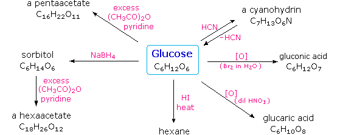
Hot hydriodic acid (HI) was often used to reductively remove oxygen functional groups from a molecule, and in the case of glucose this treatment gave hexane (in low yield). From this it was concluded that the six carbons are in an unbranched chain. The presence of an aldehyde carbonyl group was deduced from cyanohydrin formation, its reduction to the hexa-alcohol sorbitol, also called glucitol, and mild oxidation to the mono-carboxylic acid, glucuronic acid. Somewhat stronger oxidation by dilute nitric acid gave the diacid, glucaric acid, supporting the proposal of a six-carbon chain. The five oxygens remaining in glucose after the aldehyde was accounted for were thought to be in hydroxyl groups, since a penta-acetate derivative could be made. These hydroxyl groups were assigned, one each, to the last five carbon atoms, because geminal hydroxyl groups are normally unstable relative to the carbonyl compound formed by loss of water. By clicking on the above diagram, it will change to display the suggested products and the gross structure of glucose. The four middle carbon atoms in the glucose chain are centers of chirality and are colored red. Glucose and other saccharides are extensively cleaved by periodic acid, thanks to the abundance of vicinal diol moieties in their structure. This oxidative cleavage, known as the Malaprade reaction is particularly useful for the analysis of selective O-substituted derivatives of saccharides, since ether functions do not react. The stoichiometry of aldohexose cleavage is shown in the following equation.
The Configuration of Glucose The four chiral centers in glucose indicate there may be as many as sixteen (24) stereoisomers having this constitution. These would exist as eight diastereomeric pairs of enantiomers, and the initial challenge was to determine which of the eight corresponded to glucose. This challenge was accepted and met in 1891 by the German chemist Emil Fischer. His successful negotiation of the stereochemical maze presented by the aldohexoses was a logical tour de force, and it is fitting that he received the 1902 Nobel Prize for chemistry for this accomplishment. One of the first tasks faced by Fischer was to devise a method of representing the configuration of each chiral center in an unambiguous manner. To this end, he invented a simple technique for drawing chains of chiral centers, that we now call the Fischer projection formula. Click on this link for a review. At the time Fischer undertook the glucose project it was not possible to establish the absolute configuration of an enantiomer. Consequently, Fischer made an arbitrary choice for (+)-glucose and established a network of related aldose configurations that he called the D-family. The mirror images of these configurations were then designated the L-family of aldoses. To illustrate using present day knowledge, Fischer projection formulas and names for the D-aldose family (three to six-carbon atoms) are shown below, with the asymmetric carbon atoms (chiral centers) colored red. The last chiral center in an aldose chain (farthest from the aldehyde group) was chosen by Fischer as the D / L designator site. If the hydroxyl group in the projection formula pointed to the right, it was defined as a member of the D-family. A left directed hydroxyl group (the mirror image) then represented the L-family. Fischer's initial assignment of the D-configuration had a 50:50 chance of being right, but all his subsequent conclusions concerning the relative configurations of various aldoses were soundly based. In 1951 x-ray fluorescence studies of (+)-tartaric acid, carried out in the Netherlands by Johannes Martin Bijvoet (pronounced "buy foot"), proved that Fischer's choice was correct. It is important to recognize that the sign of a compound's specific rotation (an experimental number) does not correlate with its configuration (D or L). It is a simple matter to measure an optical rotation with a polarimeter. Determining an absolute configuration usually requires chemical interconversion with known compounds by stereospecific reaction paths.
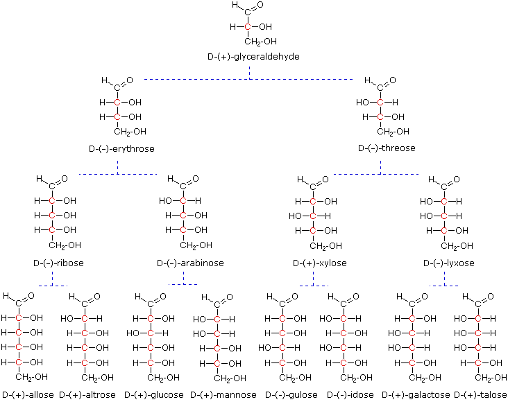
Models of representative aldoses may be examined by clicking on the Fischer formulas for glyceraldehyde, erythrose, threose, ribose, arabinose, allose, altrose, glucose or mannose in the above diagram.
Emil Fischer made use of several key reactions in the course of his carbohydrate studies. These are described here, together with the information that each delivers.
Oxidation As noted above, sugars may be classified as reducing or non-reducing based on their reactivity with Tollens', Benedict's or Fehling's reagents. If a sugar is oxidized by these reagents it is called reducing, since the oxidant (Ag(+) or Cu(+2)) is reduced in the reaction, as evidenced by formation of a silver mirror or precipitation of cuprous oxide. The Tollens' test is commonly used to detect aldehyde functions; and because of the facile interconversion of ketoses and aldoses under the basic conditions of this test, ketoses such as fructose also react and are classified as reducing sugars.
When the aldehyde function of an aldose is oxidized to a carboxylic acid the product is called an aldonic acid. Because of the 2º hydroxyl functions that are also present in these compounds, a mild oxidizing agent such as hypobromite must be used for this conversion (equation 1). If both ends of an aldose chain are oxidized to carboxylic acids the product is called an aldaric acid. By converting an aldose to its corresponding aldaric acid derivative, the ends of the chain become identical (this could also be accomplished by reducing the aldehyde to CH2OH, as noted below). Such an operation will disclose any latent symmetry in the remaining molecule. Thus, ribose, xylose, allose and galactose yield achiral aldaric acids which are, of course, not optically active. The ribose oxidation is shown in equation 2 below.
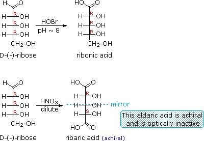
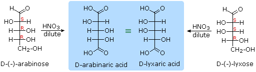
Other aldose sugars may give identical chiral aldaric acid products, implying a unique configurational relationship. The examples of arabinose and lyxose shown in equation 3 above illustrate this result. Remember, a Fischer projection formula may be rotated by 180º in the plane of projection without changing its configuration.
Reduction Sodium borohydride reduction of an aldose makes the ends of the resulting alditol chain identical, HOCH2(CHOH)nCH2OH, thereby accomplishing the same configurational change produced by oxidation to an aldaric acid. Thus, allitol and galactitol from reduction of allose and galactose are achiral, and altrose and talose are reduced to the same chiral alditol. A summary of these redox reactions, and derivative nomenclature is given in the following table.
Osazone Formation
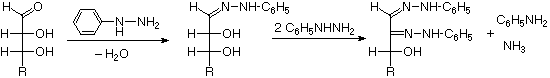
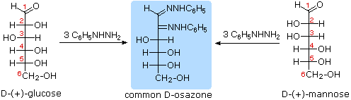
The osazone reaction was developed and used by Emil Fischer to identify aldose sugars differing in configuration only at the alpha-carbon. The upper equation shows the general form of the osazone reaction, which effects an alpha-carbon oxidation with formation of a bis-phenylhydrazone, known as an osazone. Application of the osazone reaction to D-glucose and D-mannose demonstrates that these compounds differ in configuration only at C-2.
Chain Shortening and Lengthening
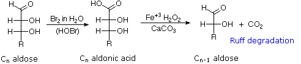
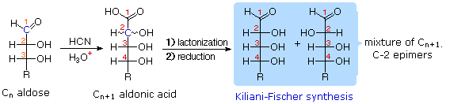
These two procedures permit an aldose of a given size to be related to homologous smaller and larger aldoses. The importance of these relationships may be seen in the array of aldose structures presented earlier, where the structural connections are given by the dashed blue lines. Thus Ruff degradation of the pentose arabinose gives the tetrose erythrose. Working in the opposite direction, a Kiliani-Fischer synthesis applied to arabinose gives a mixture of glucose and mannose. An alternative chain shortening procedure known as the Wohl degradation is essentially the reverse of the Kiliani-Fischer synthesis.
Using these reactions we can now follow Fischer's train of logic in assigning the configuration of D-glucose.
1. Ribose and arabinose (two well known pentoses) both gave erythrose on Ruff degradation. As expected, Kiliani-Fischer synthesis applied to erythrose gave a mixture of ribose and arabinose. 2. Oxidation of erythrose gave an achiral (optically inactive) aldaric acid. This defines the configuration of erythrose. 3. Oxidation of ribose gave an achiral (optically inactive) aldaric acid. This defines the configuration of both ribose and arabinose. 4. Ruff shortening of glucose gave arabinose, and Kiliani-Fischer synthesis applied to arabinose gave a mixture of glucose and mannose. 5. Glucose and mannose are therefore epimers at C-2, a fact confirmed by the common product from their osazone reactions. 6. A pair of structures for these epimers can be written, but which is glucose and which is mannose?
In order to determine which of these epimers was glucose, Fischer made use of the inherent C2 symmetry in the four-carbon dissymmetric core of one epimer (B). This is shown in the following diagram by a red dot where the symmetry axis passes through the projection formula. Because of this symmetry, if the aldehyde and 1º-alcohol functions at the ends of the chain are exchanged, epimer B would be unchanged; whereas A would be converted to a different compound. By clicking on the diagram, the consequences of such an exchange will be displayed.
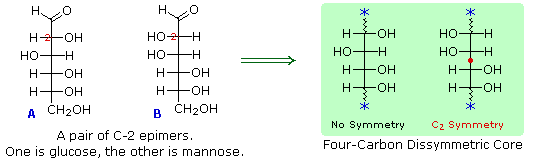
Fischer looked for and discovered a second aldohexose that represented the end group exchange for the epimer lacking the latent C2 symmetry (A). This compound was L-(+)-gulose, and its exchange relationship to D-(+)-glucose was demonstrated by oxidation to a common aldaric acid product. Equations for this operation will be displayed by clicking again on the above diagram. The remaining epimer is therefore mannose.
If a monosaccharide has a carbonyl function on one of the inner atoms of the carbon chain it is classified as a ketose. Dihydroxyacetone may not be a sugar, but it is included as the ketose analog of glyceraldehyde. The carbonyl group is commonly found at C-2, as illustrated by the following examples (chiral centers are colored red). As expected, the carbonyl function of a ketose may be reduced by sodium borohydride, usually to a mixture of epimeric products. D-Fructose, the sweetest of the common natural sugars, is for example reduced to a mixture of D-glucitol (sorbitol) and D-mannitol, named after the aldohexoses from which they may also be obtained by analogous reduction. Mannitol is itself a common natural carbohydrate.Although the ketoses are distinct isomers of the aldose monosaccharides, the chemistry of both classes is linked due to their facile interconversion in the presence of acid or base catalysts. This interconversion, and the corresponding epimerization at sites alpha to the carbonyl functions, occurs by way of an enediol tautomeric intermediate. By clicking on the diagram, an equation illustrating these isomerizations will be displayed.
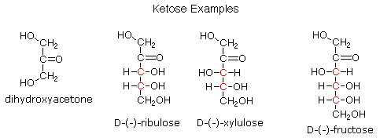
Because of base-catalyzed isomerizations of this kind, the Tollens' reagent is not useful for distinguishing aldoses from ketoses or for specific oxidation of aldoses to the corresponding aldonic acids. Oxidation by HOBr is preferred for the latter conversion.
Fischer's brilliant elucidation of the configuration of glucose did not remove all uncertainty concerning its structure. Two different crystalline forms of glucose were reported in 1895. Each of these gave all the characteristic reactions of glucose, and when dissolved in water equilibrated to the same mixture. This equilibration takes place over a period of many minutes, and the change in optical activity that occurs is called mutarotation. These facts are summarized in the diagram below.
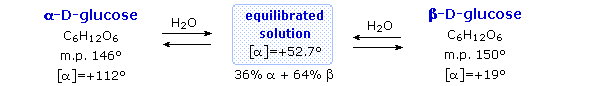
When glucose was converted to its pentamethyl ether (reaction with excess CH3I & AgOH), two different isomers were isolated, and neither exhibited the expected aldehyde reactions. Acid-catalyzed hydrolysis of the pentamethyl ether derivatives, however, gave a tetramethyl derivative that was oxidized by Tollen's reagent and reduced by sodium borohydride, as expected for an aldehyde. These reactions will be displayed above by clicking on the diagram.
The search for scientific truth often proceeds in stages, and the structural elucidation of glucose serves as a good example. It should be clear from the new evidence presented above, that the open chain pentahydroxyhexanal structure drawn above must be modified. Somehow a new stereogenic center must be created, and the aldehyde must be deactivated in the pentamethyl derivative. A simple solution to this dilemma is achieved by converting the open aldehyde structure for glucose into a cyclic hemiacetal, called a glucopyranose, as shown in the following diagram. The linear aldehyde is tipped on its side, and rotation about the C4-C5 bond brings the C5-hydroxyl function close to the aldehyde carbon. For ease of viewing, the six-membered hemiacetal structure is drawn as a flat hexagon, but it actually assumes a chair conformation. The hemiacetal carbon atom (C-1) becomes a new stereogenic center, commonly referred to as the anomeric carbon, and the α and β-isomers are called anomers.
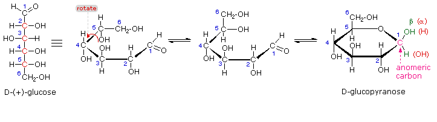
We can now consider how this modification of the glucose structure accounts for the puzzling facts noted above. First, we know that hemiacetals are in equilibrium with their carbonyl and alcohol components when in solution. Consequently, fresh solutions of either alpha or beta-glucose crystals in water should establish an equilibrium mixture of both anomers, plus the open chain chain form. This will be shown above by clicking on the diagram. Note that despite the very low concentration of the open chain aldehyde in this mixture, typical chemical reactions of aldehydes take place rapidly. Second, a pentamethyl ether derivative of the pyranose structure converts the hemiacetal function to an acetal. Acetals are stable to base, so this product should not react with Tollen's reagent or be reduced by sodium borohydride. Acid hydrolysis of acetals regenerates the carbonyl and alcohol components, and in the case of the glucose derivative this will be a tetramethyl ether of the pyranose hemiacetal. This compound will, of course, undergo typical aldehyde reactions. By clicking on the diagram a second time this relationship will be displayed above.
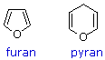
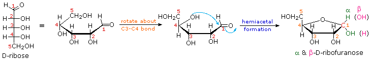
The cyclic pyranose forms of various monosaccharides are often drawn in a flat projection known as a Haworth formula, after the British chemist, Norman Haworth. As with the furanose ring, the anomeric carbon is placed on the right with the ring oxygen to the back of the edgewise view. In the D-family, the alpha and beta bonds have the same orientation defined for the furanose ring (beta is up & alpha is down). These Haworth formulas are convenient for displaying stereochemical relationships, but do not represent the true shape of the molecules. We know that these molecules are actually puckered in a fashion we call a chair conformation. Examples of four typical pyranose structures are shown below, both as Haworth projections and as the more representative chair conformers. The anomeric carbons are colored red.
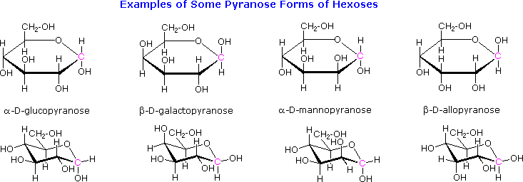
Models of these glucose, galactose, mannose and allose pyranose structures may be viewed by Clicking Here. A practice page for examining the configurations of aldohexoses may be viewed by Clicking Here.
The size of the cyclic hemiacetal ring adopted by a given sugar is not constant, but may vary with substituents and other structural features. Aldolhexoses usually form pyranose rings and their pentose homologs tend to prefer the furanose form, but there are many counter examples. The formation of acetal derivatives illustrates how subtle changes may alter this selectivity. By clicking on the above diagram. the display will change to illustrate this. A pyranose structure for D-glucose is drawn in the rose-shaded box on the left. Acetal derivatives have been prepared by acid-catalyzed reactions with benzaldehyde and acetone. As a rule, benzaldehyde forms six-membered cyclic acetals, whereas acetone prefers to form five-membered acetals. The top equation shows the formation and some reactions of the 4,6-O-benzylidene acetal, a commonly employed protective group. A methyl glycoside derivative of this compound (see below) leaves the C-2 and C-3 hydroxyl groups exposed to reactions such as the periodic acid cleavage, shown as the last step. The formation of an isopropylidene acetal at C-1 and C-2, center structure, leaves the C-3 hydroxyl as the only unprotected function. Selective oxidation to a ketone is then possible. Finally, direct di-O-isopropylidene derivatization of glucose by reaction with excess acetone results in a change to a furanose structure in which the C-3 hydroxyl is again unprotected. However, the same reaction with D-galactose, shown in the blue-shaded box, produces a pyranose product in which the C-6 hydroxyl is unprotected. Both derivatives do not react with Tollens' reagent. This difference in behavior is attributed to the cis-orientation of the C-3 and C-4 hydroxyl groups in galactose, which permits formation of a less strained five-membered cyclic acetal, compared with the trans-C-3 and C-4 hydroxyl groups in glucose. Derivatizations of this kind permit selective reactions to be conducted at different locations in these highly functionalized molecules.
The ring size of these cyclic monosaccharides was determined by oxidation and chain cleavage of their tetra methyl ether derivatives. To see how this was done for glucose Click Here.
Acetal derivatives formed when a monosaccharide reacts with an alcohol in the presence of an acid catalyst are called glycosides. This reaction is illustrated for glucose and methanol in the diagram below. In naming of glycosides, the "ose" suffix of the sugar name is replaced by "oside", and the alcohol group name is placed first. As is generally true for most acetals, glycoside formation involves the loss of an equivalent of water. The diether product is stable to base and alkaline oxidants such as Tollen's reagent. Since acid-catalyzed aldolization is reversible, glycosides may be hydrolyzed back to their alcohol and sugar components by aqueous acid. The anomeric methyl glucosides are formed in an equilibrium ratio of 66% alpha to 34% beta. From the structures in the previous diagram, we see that pyranose rings prefer chair conformations in which the largest number of substituents are equatorial. In the case of glucose, the substituents on the beta-anomer are all equatorial, whereas the C-1 substituent in the alpha-anomer changes to axial. Since substituents on cyclohexane rings prefer an equatorial location over axial (methoxycyclohexane is 75% equatorial), the preference for alpha-glycopyranoside formation is unexpected, and is referred to as the anomeric effect.
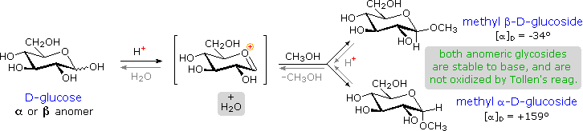
Glycosides abound in biological systems. By attaching a sugar moiety to a lipid or benzenoid structure, the solubility and other properties of the compound may be changed substantially. Because of the important modifying influence of such derivatization, numerous enzyme systems, known as glycosidases, have evolved for the attachment and removal of sugars from alcohols, phenols and amines. Chemists refer to the sugar component of natural glycosides as the glycon and the alcohol component as the aglycon. Two examples of naturally occurring glycosides and one example of an amino derivative will be displayed above by clicking on the diagram. Salicin, one of the oldest herbal remedies known, was the model for the synthetic analgesic aspirin. A large class of hydroxylated, aromatic oxonium cations called anthocyanins provide the red, purple and blue colors of many flowers, fruits and some vegetables. Peonin is one example of this class of natural pigments, which exhibit a pronounced pH color dependence. The oxonium moiety is only stable in acidic environments, and the color changes or disappears when base is added. The complex changes that occur when wine is fermented and stored are in part associated with glycosides of anthocyanins. Finally, amino derivatives of ribose, such as cytidine play important roles in biological phosphorylating agents, coenzymes and information transport and storage materials.
For a discussion of the anomeric effect Click Here. For examples of structurally and functionally modified sugars Click Here.
When the alcohol component of a glycoside is provided by a hydroxyl function on another monosaccharide, the compound is called a disaccharide. Four examples of disaccharides composed of two glucose units are shown in the following diagram. The individual glucopyranose rings are labeled A and B, and the glycoside bonding is circled in light blue. Notice that the glycoside bond may be alpha, as in maltose and trehalose, or beta as in cellobiose and gentiobiose. Acid-catalyzed hydrolysis of these disaccharides yields glucose as the only product. Enzyme-catalyzed hydrolysis is selective for a specific glycoside bond, so an alpha-glycosidase cleaves maltose and trehalose to glucose, but does not cleave cellobiose or gentiobiose. A beta-glycosidase has the opposite activity. In order to draw a representative structure for cellobiose, one of the glucopyranose rings must be rotated by 180º, but this feature is often omitted in favor of retaining the usual perspective for the individual rings. The bonding between the glucopyranose rings in cellobiose and maltose is from the anomeric carbon in ring A to the C-4 hydroxyl group on ring B. This leaves the anomeric carbon in ring B free, so cellobiose and maltose both may assume alpha and beta anomers at that site (the beta form is shown in the diagram). Gentiobiose has a beta-glycoside link, originating at C-1 in ring A and terminating at C-6 in ring B. Its alpha-anomer is drawn in the diagram. Because cellobiose, maltose and gentiobiose are hemiacetals they are all reducing sugars (oxidized by Tollen's reagent). Trehalose, a disaccharide found in certain mushrooms, is a bis-acetal, and is therefore a non-reducing sugar. A systematic nomenclature for disaccharides exists, but as the following examples illustrate, these are often lengthy.
Cellobiose : 4-O-β-D-Glucopyranosyl-D-glucose (the beta-anomer is drawn) Maltose : 4-O-α-D-Glucopyranosyl-D-glucose (the beta-anomer is drawn) Gentiobiose : 6-O-β-D-Glucopyranosyl-D-glucose (the alpha-anomer is drawn) Trehalose : α-D-Glucopyranosyl-α-D-glucopyranoside
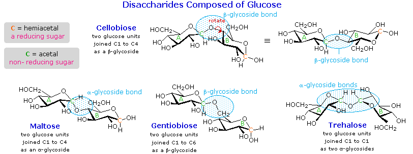
Although all the disaccharides shown here are made up of two glucopyranose rings, their properties differ in interesting ways. Maltose, sometimes called malt sugar, comes from the hydrolysis of starch. It is about one third as sweet as cane sugar (sucrose), is easily digested by humans, and is fermented by yeast. Cellobiose is obtained by the hydrolysis of cellulose. It has virtually no taste, is indigestible by humans, and is not fermented by yeast. Some bacteria have beta-glucosidase enzymes that hydrolyze the glycosidic bonds in cellobiose and cellulose. The presence of such bacteria in the digestive tracts of cows and termites permits these animals to use cellulose as a food. Finally, it may be noted that trehalose has a distinctly sweet taste, but gentiobiose is bitter. Disaccharides made up of other sugars are known, but glucose is often one of the components. Two important examples of such mixed disaccharides will be displayed above by clicking on the diagram. Lactose, also known as milk sugar, is a galactose-glucose compound joined as a beta-glycoside. It is a reducing sugar because of the hemiacetal function remaining in the glucose moiety. Many adults, particularly those from regions where milk is not a dietary staple, have a metabolic intolerance for lactose. Infants have a digestive enzyme which cleaves the beta-glycoside bond in lactose, but production of this enzyme stops with weaning. Cheese is less subject to the lactose intolerance problem, since most of the lactose is removed with the whey. Sucrose, or cane sugar, is our most commonly used sweetening agent. It is a non-reducing disaccharide composed of glucose and fructose joined at the anomeric carbon of each by glycoside bonds (one alpha and one beta). In the formula shown here the fructose ring has been rotated 180º from its conventional perspective. To examine a model of sucrose Click Here
Additional Topics For a brief discussion of sweetening agents Click Here. For examples of some larger saccharide oligomers Click Here.
As the name implies, polysaccharides are large high-molecular weight molecules constructed by joining monosaccharide units together by glycosidic bonds. They are sometimes called glycans. The most important compounds in this class, cellulose, starch and glycogen are all polymers of glucose. This is easily demonstrated by acid-catalyzed hydrolysis to the monosaccharide. Since partial hydrolysis of cellulose gives varying amounts of cellobiose, we conclude the glucose units in this macromolecule are joined by beta-glycoside bonds between C-1 and C-4 sites of adjacent sugars. Partial hydrolysis of starch and glycogen produces the disaccharide maltose together with low molecular weight dextrans, polysaccharides in which glucose molecules are joined by alpha-glycoside links between C-1 and C-6, as well as the alpha C-1 to C-4 links found in maltose. Polysaccharides built from other monosaccharides (e.g. mannose, galactose, xylose and arabinose) are also known, but will not be discussed here.
Over half of the total organic carbon in the earth's biosphere is in cellulose. Cotton fibers are essentially pure cellulose, and the wood of bushes and trees is about 50% cellulose. As a polymer of glucose, cellulose has the formula (C6H10O5)n where n ranges from 500 to 5,000, depending on the source of the polymer. The glucose units in cellulose are linked in a linear fashion, as shown in the drawing below. The beta-glycoside bonds permit these chains to stretch out, and this conformation is stabilized by intramolecular hydrogen bonds. A parallel orientation of adjacent chains is also favored by intermolecular hydrogen bonds. Although an individual hydrogen bond is relatively weak, many such bonds acting together can impart great stability to certain conformations of large molecules. Most animals cannot digest cellulose as a food, and in the diets of humans this part of our vegetable intake functions as roughage and is eliminated largely unchanged. Some animals (the cow and termites, for example) harbor intestinal microorganisms that breakdown cellulose into monosaccharide nutrients by the use of beta-glycosidase enzymes. Cellulose is commonly accompanied by a lower molecular weight, branched, amorphous polymer called hemicellulose. In contrast to cellulose, hemicellulose is structurally weak and is easily hydrolyzed by dilute acid or base. Also, many enzymes catalyze its hydrolysis. Hemicelluloses are composed of many D-pentose sugars, with xylose being the major component. Mannose and mannuronic acid are often present, as well as galactose and galacturonic acid.
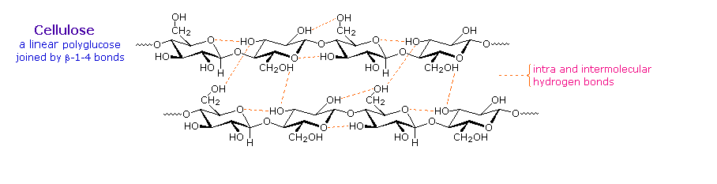
Starch is a polymer of glucose, found in roots, rhizomes, seeds, stems, tubers and corms of plants, as microscopic granules having characteristic shapes and sizes. Most animals, including humans, depend on these plant starches for nourishment. The structure of starch is more complex than that of cellulose. The intact granules are insoluble in cold water, but grinding or swelling them in warm water causes them to burst. The released starch consists of two fractions. About 20% is a water soluble material called amylose. Molecules of amylose are linear chains of several thousand glucose units joined by alpha C-1 to C-4 glycoside bonds. Amylose solutions are actually dispersions of hydrated helical micelles. The majority of the starch is a much higher molecular weight substance, consisting of nearly a million glucose units, and called amylopectin. Molecules of amylopectin are branched networks built from C-1 to C-4 and C-1 to C-6 glycoside links, and are essentially water insoluble. Representative structural formulas for amylose and amylopectin will be shown above by clicking on the diagram. To see an expanded structure for amylopectin click again on the diagram. The branching in this diagram is exaggerated, since on average, branches only occur every twenty five glucose units. Hydrolysis of starch, usually by enzymatic reactions, produces a syrupy liquid consisting largely of glucose. When cornstarch is the feedstock, this product is known as corn syrup. It is widely used to soften texture, add volume, prohibit crystallization and enhance the flavor of foods. Glycogen is the glucose storage polymer used by animals. It has a structure similar to amylopectin, but is even more highly branched (about every tenth glucose unit). The degree of branching in these polysaccharides may be measured by enzymatic or chemical analysis.
For examples of chemical analysis of branching Click Here.
Synthetic Modification of Cellulose Cotton, probably the most useful natural fiber, is nearly pure cellulose. The manufacture of textiles from cotton involves physical manipulation of the raw material by carding, combing and spinning selected fibers. For fabrics the best cotton has long fibers, and short fibers or cotton dust are removed. Crude cellulose is also available from wood pulp by dissolving the lignan matrix surrounding it. These less desirable cellulose sources are widely used for making paper. In order to expand the ways in which cellulose can be put to practical use, chemists have devised techniques for preparing solutions of cellulose derivatives that can be spun into fibers, spread into a film or cast in various solid forms. A key factor in these transformations are the three free hydroxyl groups on each glucose unit in the cellulose chain, --[C6H7O(OH)3]n--. Esterification of these functions leads to polymeric products having very different properties compared with cellulose itself.
Cellulose Nitrate, first prepared over 150 years ago by treating cellulose with nitric acid, is the earliest synthetic polymer to see general use. The fully nitrated compound, --[C6H7O(ONO2)3]n--, called guncotton, is explosively flammable and is a component of smokeless powder. Partially nitrated cellulose is called pyroxylin. Pyroxylin is soluble in ether and at one time was used for photographic film and lacquers. The high flammability of pyroxylin caused many tragic cinema fires during its period of use. Furthermore, slow hydrolysis of pyroxylin yields nitric acid, a process that contributes to the deterioration of early motion picture films in storage. Cellulose Acetate, --[C6H7O(OAc)3]n--, is less flammable than pyroxylin, and has replaced it in most applications. It is prepared by reaction of cellulose with acetic anhydride and an acid catalyst. The properties of the product vary with the degree of acetylation. Some chain shortening occurs unavoidably in the preparations. An acetone solution of cellulose acetate may be forced through a spinneret to generate filaments, called acetate rayon, that can be woven into fabrics. Viscose Rayon, is prepared by formation of an alkali soluble xanthate derivative that can be spun into a fiber that reforms the cellulose polymer by acid quenching. The following general equation illustrates these transformations. The product fiber is called viscose rayon.
Many complex polysaccharides are found in nature. The galactomannans, consisting of a mannose backbone with galactose side groups, are an interesting and useful example. A (1-4)-linked beta-D-mannose chain is adorned with 1-6-linked alpha-D-galactose units, as shown in the diagram below. The ratio of galactose to mannose usually ranges from 1:2 to 1:4. An important source of this substance is the guar bean, grown principally in northwestern India, and Pakistan. Altough guar protein is not of nutritional value to humans (guar means 'cow food' in Hindi), the bean is important as a source of guar gum, a galactomannan which forms a gel in water. The food industry uses this material as a stabilizer in ice cream, cream cheese and salad dressings.
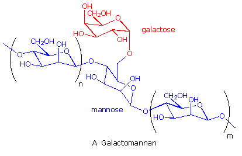
This page is the property of The Edvibe Team. Comments, questions and errors should be sent to contact@edvibe.co.ke. These pages are provided to the IOCD to assist in capacity building in chemical education. 05/05/2013